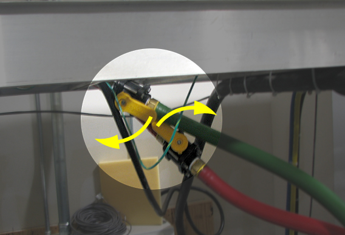
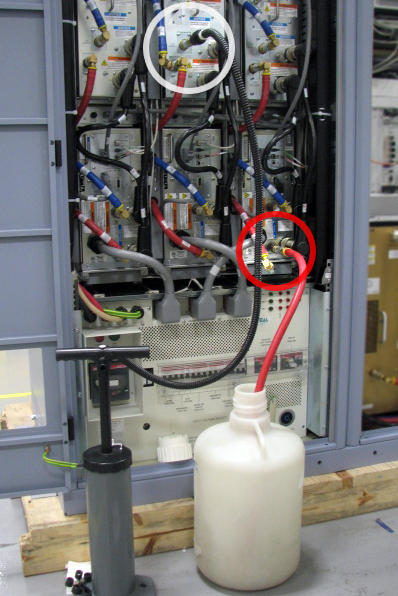
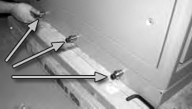
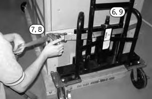

Operating Documentation
Direction 5500113, Rev# 3
Discovery MR450 1.5T Service Methods
Module Version 2.0, Version Date 8/12/10
Operating Documentation |
| Required Persons | Preliminary Reqs | Procedure | Finalization |
|---|---|---|---|
| 1 | Not Applicable | 25 hours | 1 hour |
This procedure describes removal and replacement of the components in the PGR cabinet in the instance where a PDU has failed, requiring a PGR cabinet containing only a PDU.
| Item | Qty | Effectivity | Part# | Manufacturer | |
|---|---|---|---|---|---|
| MR Equipment Room Hoist Kit | 1 | - | 5196226 | - | |
| Non-Magnetic Tool Kit | 1 | - | 5113258 | - | |
| Water Removal Pump Kit (located in HEC) | 1 | - | 5369683 | - | |
| 5 gallon Pail with Handle | 1 | - | 2239133 | - | |
| Cabinet Dollies | 2 | - | 5307574 | - | |
| ESD Grounding Wrist Strap | 1 | - | - | - | |
| Safety Glasses | 1 | - | - | - | |
| Work Gloves | 1 pr | - | - | - | |
| Item | Qty | Effectivity | Part# | Manufacturer |
|---|---|---|---|---|
| Cable Ties | - | - | - | |
| Towels | - | - | - |
| Item | Qty | Effectivity | Part# | Manufacturer | |
|---|---|---|---|---|---|
| 32-Channel 1.5T PGR Cabinet | 1 | - | 5370799 | - | |
| Lifting Bracket, XGA and XPS FRU (comes with 5370799) | 1 | - | 5263794 | - | |
| Coolant, 4 Gallons – non–copper corrosive, algae resistant | 1 | - | 5174313-4 | - | |
| ||||
| Electric Shock Hazard! | ||||
| High voltages are present in the PGR PDU/Gradient Cabinet. | ||||
| Lock out and Tag out the PGR PDU/Gradient subsystem before proceeding. |
| ||||
| Possible Personal Injury or Equipment Damage. | ||||
| Components could fall while using the hoist. | ||||
| Before putting weight on the hoist, be sure that the hoist chain links are aligned properly. This will keep the chain from binding up or becoming kinked, which is nearly impossible to correct when the chain is under tension. |
| Condition | Reference | Effectivity |
|---|---|---|
The PGR PDU/Gradient subsystem must be locked out and tagged out before starting this procedure. | - | - |
Turn off the power electronics pump on the HEC cabinet. Stop the pump by pressing ▲ F3 simultaneously. Turn the PPMP circuit breaker to the OFF position.
Turn the supply and return valves between the HEC and the PGR cabinet to the OFF position.
Illustration 1: Turn OFF Supply and Return Valves

Drain enough coolant from the PGR cabinet so that when the fittings are disconnected at the top of the cabinet coolant does not flow into the cabinet. Perform this by placing the open end of the drain hose into a pail, and connect the other end to the quick disconnect on the return fitting (red hose) on a XPS or the RF amplifier. Connect the hand pump to the return fitting (red hose) on a XGA assembly, and manually pump until approximately 1 gallon of coolant is removed (or enough to empty the hoses above the PGR cabinet).
Illustration 2: Drain Coolant

Place towels around the top of the PGR to catch excess coolant. Using an adjustable wrench, disconnect the fitting connecting the coolant hose to the cabinet. After the cabinet is disconnected disconnect the drain hose. Follow local regulations for proper disposal of the coolant that was removed.
Disconnect the gradient load cables, data cables, and power cables from the top of the cabinet. Disconnect the fiber optic cables from inside the cabinet. Remove these cables from the cabinet so that the cabinet may be moved.
The PGR cabinet containing all the components must now be moved utilizing the moving dollies. The moving dollies can be ordered online at www.umi-dollyshop.com.
The dollies have the following features to aid in their use:
Wheel Locking Pin - Keeps the wheels locked into a certain direction
Parking Brakes - For holding the cabinet in position
Slide and Lock - The dollies can be removed in limited space (15 inches or 380 mm)
Twinning Hardware - hardware to connect each dolly to the other dolly during transport without a cabinet
Remove any seismic mounts from the PGR cabinet, if necessary.
Install the six bushings, three on each side, to the bottom of the cabinet (these came with the moving dollies).
Illustration 3: Installation of Bushings

Maneuver the dolly so that all three bushings slip into the slide lock on the attachment plate.
Slide the dolly sideways to position the bushings in the lifting part of the attachment plate.
Illustration 4: Position Dollies on Bushings

Raise the dolly by turning the jackscrew clockwise. This will lock the dolly into position.
Secure to dollies with strap. Make sure the strap goes through the slot of the attachment plate and the clamp is on flat surface of dolly.
Tighten strap and close clamp.
Lift cabinet off of the floor by turning the jackscrew clockwise until the cabinet surface is 1 inch above the floor.
Alternate raising each dolly in 1/4 inch (6 mm) increments until the cabinet is above the floor. The image below shows a pallet however the cabinet will no longer be on the pallet.
Illustration 5: Secure Dollies to Cabinet

Move the cabinet to a temporary location where there is enough space for each of the components to be removed. The cabinet should be in close proximity to the new PGR cabinet to allow for ease of component removal and replacement. Lower the cabinet to the floor and remove the dollies.
Move the FRU PDU / PGR cabinet into the place of the old cabinet. Unfasten screws for each angle shipping bracket and remove bracket from each side of cabinet. Follow Remove Cabinet, Step 2 through Remove Cabinet, Step 7 (above) to remove the cabinet from the pallet.
Lift cabinet off of pallet by turning the jackscrew clockwise until the cabinet surface is free from the pallet surface.
Slide the pallet out from under the cabinet. Save this pallet to be used in returning the original PGR cabinet.
Lower the cabinet by turning the jackscrew counterclockwise until the cabinet is about 1 inch (25 mm) above the floor.
Alternate lowering each side of cabinet.
Move the FRU PDU / PGR cabinet into the equipment room and lower the cabinet into place.
Remove the dollies for attachment to the original PGR cabinet.
Do NOT perform the Finalization steps in the individual procedures. These will be completed when all component replacements are complete in the new PGR cabinet.
Remove the three LEM DC Current Transducers located above the XGD Amplifiers and reinstall them into the new PGR cabinet. A Phillips-head screwdriver and tie wraps are the tools that are required for this replacement. Tie wraps are needed to connect the gradient output cable to the cable bracket.
Remove the x, y, and z XGD Amplifiers and reinstall them into the new PGR cabinet by following the XGD Amplifier Replacement procedure.
Remove the three XGD Fan Box Assemblies and reinstall them in the new PGR cabinet by following the XGD Fan Box Assembly Replacement procedure.
Remove the x, y, and z XPS units and reinstall them into the new PGR cabinet by following the XPS Replacement procedure.
Remove and reinstall the CAM chassis in the new PGR cabinet by following the CAM Chassis Removal/Replacement section of the CAM Chassis Replacements procedure.
Remove Auxiliary Module from the PRG cabinet by following the Auxiliary Board Replacement procedure. Do NOT reinstall the Auxiliary Module until the term server replacement (next step) is complete.
Remove and reinstall the term server in the new PGR cabinet by following the Terminal Server Replacement procedure.
Reinstall the Auxiliary Module in the new PGR cabinet by following the Auxiliary Board Replacementprocedure.
Remove and reinstall the Ethernet Switch in the new PGR cabinet by following the Network Switch Replacement procedure.
Remove and reinstall the RF Amp in the new PGR cabinet by following the 1.5T RF Amplifier Replacement procedure.
The new FRU cabinet does not have a PDM. The new cabinet contains a terminal strip and an outlet strip for all the connections that were on the PDM.
Remove and reinstall the Cronus chassis in the new PGR cabinet by following the XGD Cronus Chassis section of the XGD Cronus Chassis Replacements procedure.
Remove and reinstall the ICN in the new PGR cabinet by following the ICN Replacements (4100 or 4170) procedure.
If the cabinet contains two 4100 ICNs, the slide rail must be removed from the old cabinet and placed in the new PGR cabinet to allow for mounting the second ICN. Follow the procedure for mounting the ICN rails as described in ICN Conversion Manual (4170 to 4100).
Connect gradient load cables X, Y, and Z. Connect fiber optic cable set and data cable sets according to each cable’s label. Connect remaining power cables. If necessary, reference block diagram for cable connections.
Reconnect the coolant hoses to the PGR cabinet, ensuring the supply (green) hose and return (red) hose are installed on the correct fittings. Open the ball valves between the HEC and PGR cabinet.
Perform the PGR cabinet PDU setup on the new PDU. Instructions are found in the system installation manual.
Media File 1: Discovery MR450 & MR750 System Installation Manual

When the original PGR cabinet contains only a PDU, attach the shipping pallet to the cabinet and return both the cabinet and the dollies.
Ensure all previously closed coolant valves are now open. Turn on the PPMP CB at the HEC. Start the pump by pressing up+F3 simultaneously. Air will push through the HEC reservoir as coolant fills the modules in the PGR cabinet. Add the required amount of coolant to the PE tank in the HEC to get the level ~3-5 inches from the top of the tank. Check ball valves in the hoses, connections at the top of the PGR, and all quick-disconnects in the PGR cabinet for leaks.
Restore the power to the PGR/PDU using the LOTO for the PGR PDU/Gradient Subsystem procedure.
Check for leaks around the PGR cabinet fittings, check Gradient reservoir and add coolant if necessary.
Reset TPS to ensure the system downloads.
Refer to Resetting TPS and Results for details.
Check and ensure the Fan Box Assemblies are operating appropriately.
Run Quick Diagnostics (15 minutes) to verify operations.
Run Goodbye scan on the head, body and surface.
Refer to Check Scan for details.